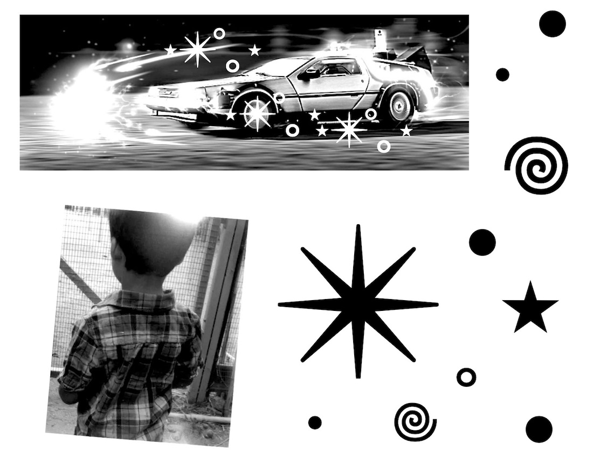
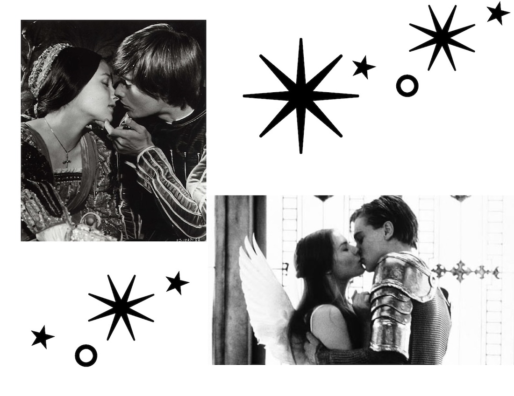
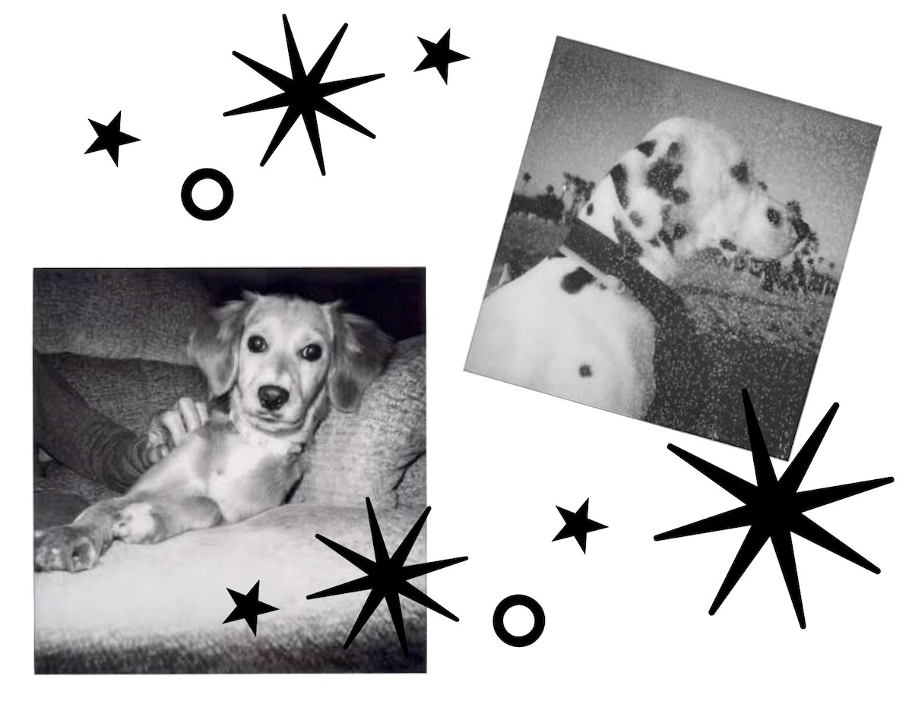
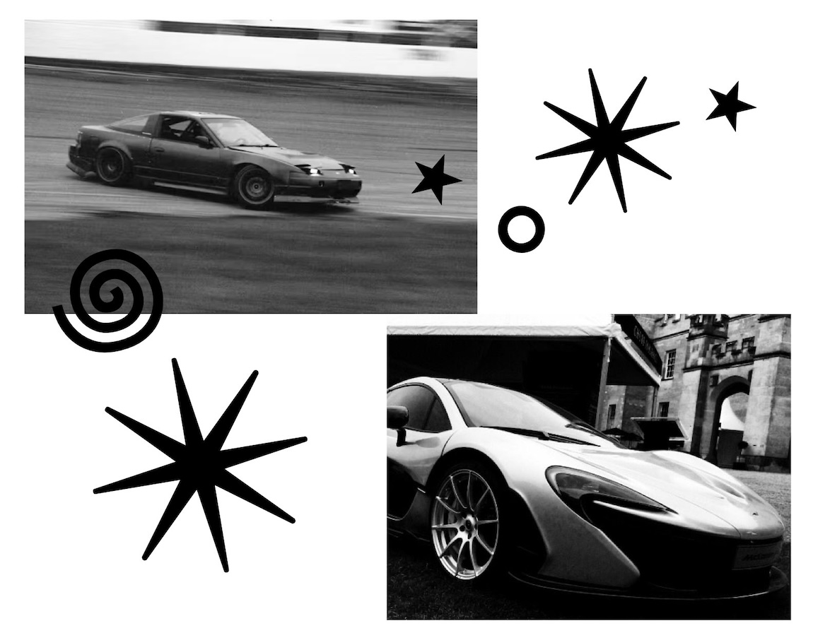
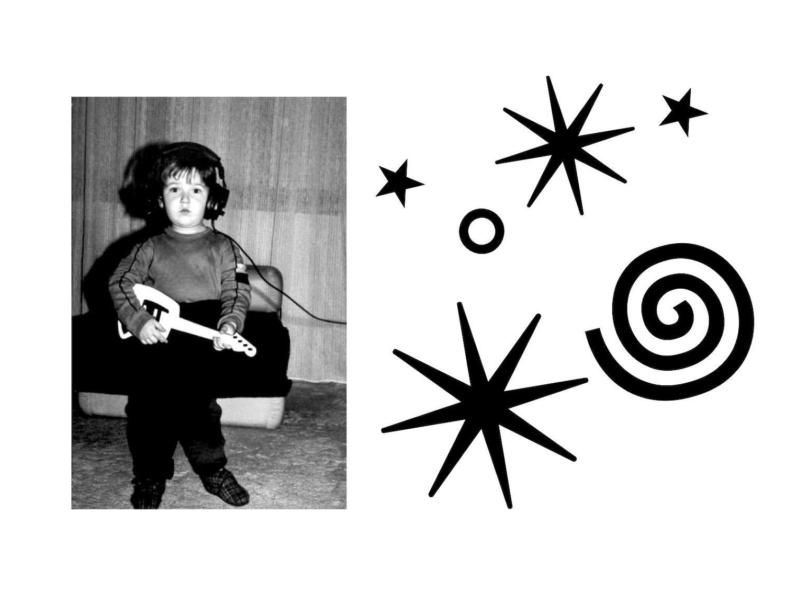
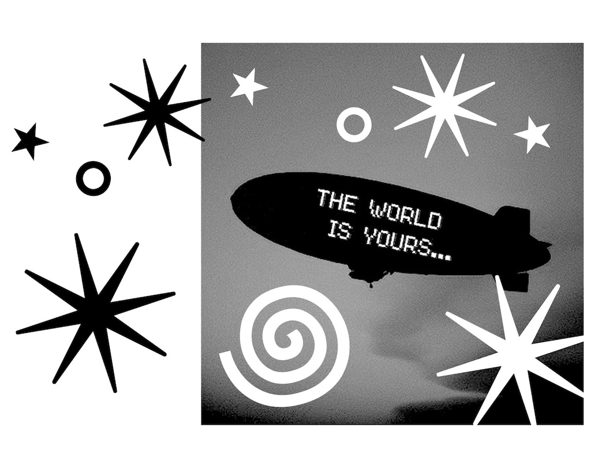
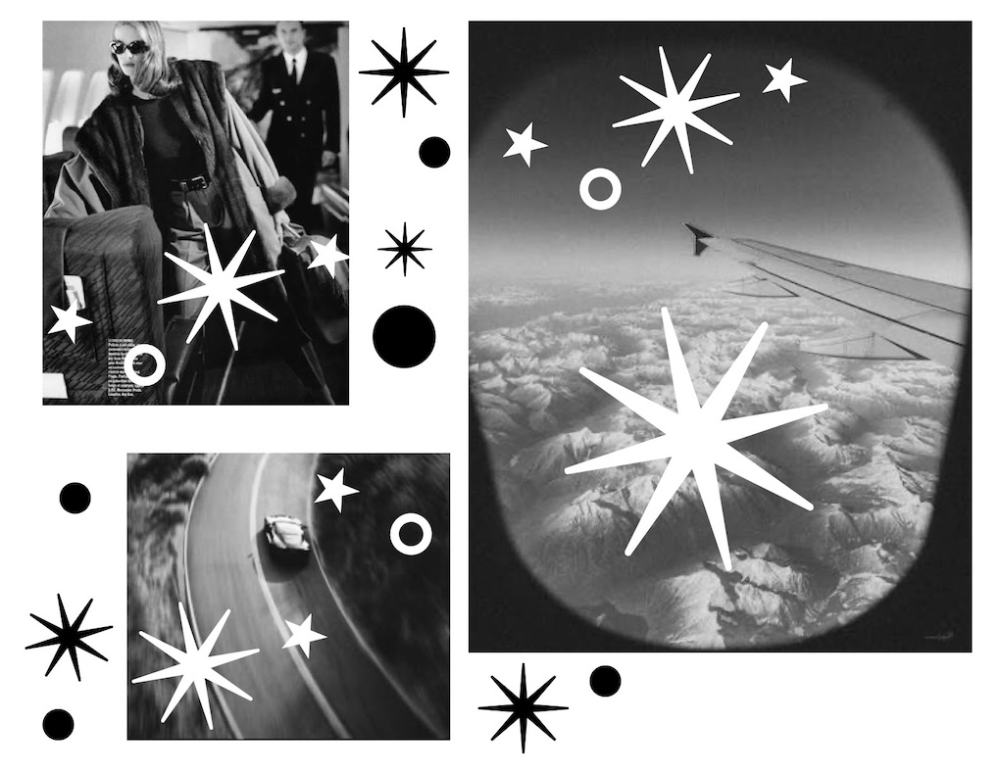
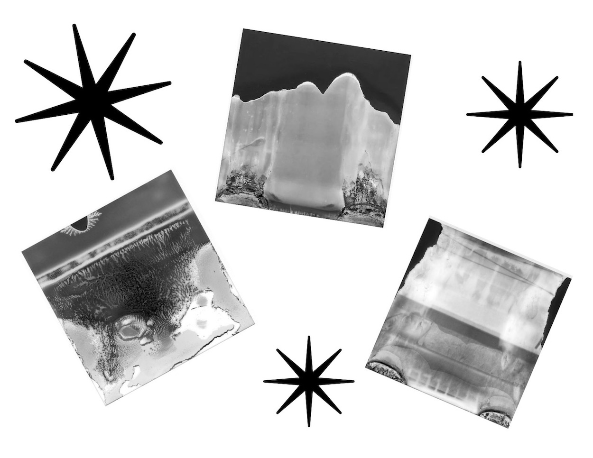
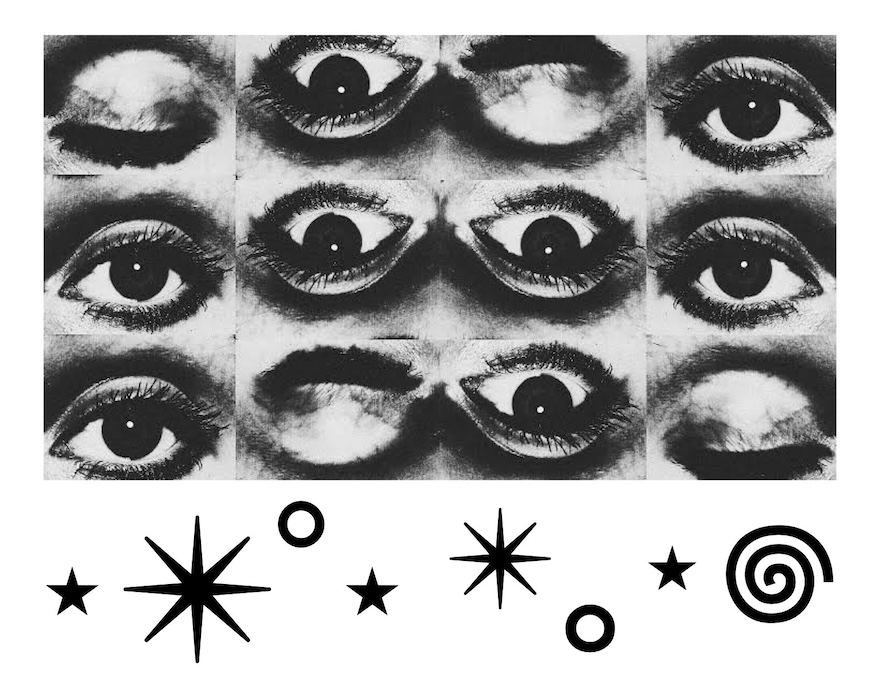

⊹₊⭒˚𖦹｡⋆ 🆆🅸🆂🅷 🅰🆁🅲🅷🅸🆅🅴 ⋆｡𖦹˚⭒₊⊹
-
I WISH ████████████████████
I WISH FOR WORLD PEACE
WISH 1 -
I WISH ████████████████████
I WISH I COULD BEGIN AGAIN

WISH 2 -
I WISH ████████████████████
I WISH I WASN’T LIVING PAYCHECK TO PAYCHECK
WISH 3 -
I WISH ████████████████████
I WISH TO MEET MY SOULMATE

WISH 4 -
I WISH ████████████████████
I WISH I WAS RICHER THAN BILL GATES
WISH 5 -
I WISH ████████████████████
I WISH I HAD A PUPPY

WISH 6 -
I WISH ████████████████████
I WISH I HAD A BRAND NEW SPORTS CAR

WISH 7 -
I WISH ████████████████████
I WISH MY YOUNGER SELF COULD SEE ME NOW

WISH 8 -
I WISH ████████████████████
I WISH I WASN’T SO AFRAID TO PURSUE MY DREAMS

WISH 9 -
I WISH ████████████████████
I WISH I COULD TRAVEL THE WORLD

WISH 10 -
I WISH ████████████████████
I WISH I COULD STOP OVERTHINKING EVERYTHING

WISH 11 -
I WISH ████████████████████
I WISH I COULD TALK TO MY YOUNGER SELF
WISH 12 -
I WISH ████████████████████
I WISH I COULD KNOW WHAT THE FUTURE HOLDS

WISH 13